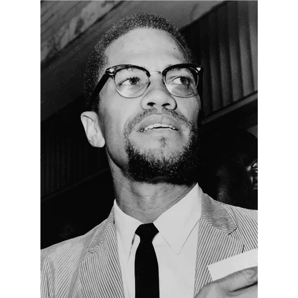

Malcolm X
The man who knew, and paid the price

The Karate Can Do Attitude
A Tribute To The Man Himself, Malcom X
The timeline of Malcolm X from birth till death.
- 1925 May 19: Malcolm X is born Malcolm Little in Omaha, Nebraska, the fourth of Earl and Louise Little's seven children. Earl, a Baptist minister, is a follower of Marcus Garvey's black nationalism and serves as Omaha chapter president of Garvey's Universal Negro Improvement Association. Louise Little serves as the division secretary.
- 1926 December: The Littles leave Omaha and move to Milwaukee, Wisconsin.
- 1928
The Littles move again, this time to Lansing, Michigan. Settling in a white neighborhood, they
are sued for eviction on the basis that a restrictive covenant prevents their home from being
sold to any non-Caucasians.
November 7: The Little house is burned to the ground. No fire wagon is dispatched to the scene. Looking back Malcolm believes that a local white supremacist group was behind it. - 1931 September 28: Louise has a premonition about her husband and asks him not to leave the house. Later that night, Earl Little is killed in what police term a streetcar accident, but Malcolm later says that the Ku Klux Klan was behind it. After Earl's death, his wife and children struggle to make ends meet and must apply for public assistance.
- 1938 December 23: Louise Little is diagnosed as mentally ill and sent to the Kalamazoo State Mental Hospital, where she will stay for 26 years.
- 1939 The state places the Little children with various foster families, and Malcolm, who has been kicked out of school in the seventh grade, is sent to a juvenile home in the nearly all-white community of Mason, Michigan. He does well at school there, earning straight A's and being elected president of his 8th-grade class, but his teacher discourages him about pursuing his goal of becoming a lawyer.
- 1940 Summer: Fifteen-year-old Malcolm visits his half-sister Ella Collins in the Roxbury neighborhood of Boston and is entranced. "I couldn't have feigned indifference if I had tried to," he later says. "I didn't know the world contained as many Negroes as I saw thronging downtown Roxbury at night."
- 1941 February: Ella Collins gains custody of Malcolm and he moves to Boston. Over the next few years, he works a number of odd jobs on railroads, in restaurants and bars, at shoeshine stands, and in a jewelry store. Malcolm learns to dress like a hipster, dyes his hair, and starts hustling in Boston (where he's known as "New York Red"), New York (where the nickname is "Detroit Red"), and Detroit.
- 1943 October 25: Malcolm, who has responded to his draft notice by loudly proclaiming that he wants to "fight for the Japanese" and kill whites, is found mentally unfit for military service and classified 4F.
- 1944 Malcolm has his first run in with the courts. He is sentenced to four months in jail and one year of probation for larceny.
- 1946
January: Malcolm tries to retrieve a stolen $1000 watch from a pawnshop and is arrested and
charged with grand larceny, breaking and entering, and firearms possession. He is convicted and,
along with Jarvis, receives an eight-to-10-year sentence. The white women have their sentences
suspended, but Malcolm's girlfriend serves seven months in prison. The women refused the police
suggestion to charge Malcolm and Malcolm Jarvis with rape.
February: At the age of 20, Malcolm is sent to jail in Charlestown, Massachusetts, and assigned prisoner number 22843. He will remain behind bars until 1952. - 1947 Malcolm meets a fellow convict he calls "Bimbi," who convinces Malcolm to study and learn to develop his mind. In Jarvis' words, in prison "the only way we knew how to rebel was to cram some knowledge into our brains."
- 1948 Malcolm's siblings, four of whom have converted to Islam, introduce him to the words of the Nation of Islam's leader, Elijah Muhammad, who is himself in prison for sedition and violation of the draft laws. The two men correspond, and Malcolm continues his course of study, eventually writing to the Massachusetts governor and demanding the right to practice Islam in prison. He also joins the prison debate team and begins attracting attention for his oratory.
- 1952 August 7: Malcolm is released on parole, spends one night with Ella Collins, then goes to Detroit to live with his brother Wilfred. He quickly joins the Nation of Islam and attends meetings at Detroit's Temple No. 1, one of the four temples that the Nation operates at the time. Malcolm rejects the surname "Little" as a slave name given to his family by white oppressors, and he becomes known as "Malcolm X." Dismayed that the Nation of Islam is not attracting more followers (at the time, total nationwide membership was about 400), Malcolm begins an intensive recruiting campaign with Elijah Muhammad's blessing. Soon membership in the Nation begins to soar.
- 1953
August: Having tripled the membership of the Detroit temple in under a year, Malcolm is
appointed assistant minister there.
September: Elijah Muhammad sends Malcolm back to Boston to serve as first minister of its Temple No. 11. He goes on to organize temples along the East Coast, including in Hartford and Philadelphia, attracting new members wherever he speaks. - 1954 June: Elijah Muhammad gives Malcolm his highest appointment to date, chief minister of Harlem's Temple No. 7. In Malcolm's words, "For Mr. Muhammad's teachings really to resurrect American black people, Islam obviously had to grow, to grow very big. And nowhere in America was such a single Temple potential available as in New York's five boroughs." Thanks in large part to Malcolm's charisma and tireless recruiting, within the next five years membership in the Nation of Islam swells to 40,000 and supports 49 temples.
- 1955 Malcolm X attends the first Conference of the Non-aligned Nations in Bandung, Indonesia.
- 1956 Malcolm's future wife Betty Sanders becomes a member of the Harlem Temple and adopts the name "Betty X." They will marry two years later, after Malcolm proposes by phone from a Detroit gas station, and take up residence in East Elmhurst, Queens.
- 1957 April 14: New York Temple member Johnson Hinton is savagely beaten by police. Alerted by other followers, Malcolm joins a contingent of Muslims at the 28th Precinct headquarters in Harlem, where he demands that Hinton receive medical attention. Hinton is eventually taken by ambulance to a nearby hospital, but the Muslims refuse to disperse, which alarms police. Satisfied that his demands have been met, Malcolm disperses the crowd with a wave of his hand. He later sues New York City for police brutality and wins the largest settlement in its history. Media coverage of the Hinton incident brings Malcolm national attention, and the FBI, which has kept a file on Malcolm since 1953, now considers him a "key figure" meriting significant surveillance. Police harassment of Malcolm and his family escalates.
- 1958 Malcolm and Betty X's first child, Attalah, is born
- 1959 Spring-Summer: Malcolm makes his first trips abroad, visiting Ghana, Sudan, Nigeria, Iran, Syria, Egypt, and the United Arab Republic; illness prevents him from traveling to Mecca. Meets with President Gamal Abdel Nasser of Egypt. July 13: New York television begins airing a five-part documentary by Mike Wallace entitled The Hate that Hate Produced, which Wallace calls "a study of the rise of black racism, of a call for black supremacy among a small but growing segment of the American Negro population." Elijah Muhammad has been against participating in the program, but Malcolm talks him into it. Despite its negative tone, the documentary spurs increased interest and growing membership in the Nation of Islam. In Malcolm's words, "it seems that everywhere I went telephones were ringing." But the Nation's higher profile alarms many in both the white community and the nascent civil rights movement.
- 1961 Elijah Muhammad, who has moved from Chicago to Phoenix for health reasons, makes Malcolm national representative of the Nation of Islam. This creates resentment among Muhammad's inner circle who do not want Malcolm to be the next leader. Malcolm is increasingly asked to lecture on college campuses (eventually he will trail only Barry Goldwater in popularity as a speaker there) and participate in television and radio debates.